In Computing PCA you learned to run a PCA and read its scores and loadings. PCA always hands you as many principal components as you have features — but only the first few carry signal. Today’s two questions: how many components do I keep, and how can PCA quietly mislead me?
Read the variance explained by each PC (an eigenvalue in disguise) and turn it into a proportion.
Choose a number of PCs with a scree plot / elbow, a cumulative-variance threshold, or simple rules of thumb.
Know the pitfalls: PCA is unsupervised, so the biggest-variance axis need not be the biologically interesting one; batch effects can hijack PC1; results shift with scaling and outliers; and PCA only sees linear structure.
A teaser of what lies beyond: ICA (independent, not merely uncorrelated) and non-linear maps like UMAP (seen in the single-cell block).
This is a judgement day: fewer formulas, more “what would a careful analyst do here.”
The biology: you ran a PCA, now what?
You have a gene-expression matrix: 60 tumour samples \(\times\) 20,000 genes. You run prcomp and get 60 principal components back.
Plotting PC1 vs PC2 shows two clean clusters. Great — but are two components enough?
Would PC3 split a cluster into two disease subtypes? Would PC4? Where do you stop?
And the clusters you see on PC1: are they biology (tumour subtype) or technology (two sequencing runs)?
Keeping too few PCs discards real signal; keeping too many re-imports noise. And a confident-looking plot can be showing you the wrong thing entirely.
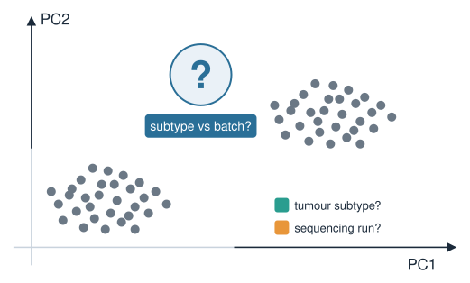
Each PC carries a slice of variance
From Eigenvalues & eigenvectors: PCA diagonalises the (centred) data’s covariance matrix. Each PC is an eigenvector; its eigenvalue \(\lambda_k\) is the variance of the data along that PC.
PCs come sorted: \(\lambda_1 \ge \lambda_2 \ge \dots \ge \lambda_p \ge 0\). PC1 captures the most variance, PC2 the most of what remains, and so on.
The eigenvalues sum to the total variance in the data: $_k _k = $ total variance.
In R, prcomp reports the standard deviation of each PC in sdev, so the variance (the eigenvalue) is sdev^2.
“How many PCs to keep” is really: how many eigenvalues are big enough to matter?
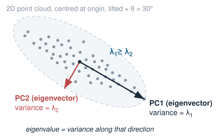
From eigenvalue to proportion of variance
Raw eigenvalues depend on units. Convert each to a proportion of variance explained (PVE):
PVE\(_k\) is a number in \([0,1]\): the fraction of total variance living on PC \(k\).
The cumulative PVE, \(\sum_{j\le k}\text{PVE}_j\), is the fraction captured by the first \(k\) PCs together.
Example: if the first three PVEs are \(0.42, 0.18, 0.07\), then PC1–PC3 together explain \(0.42+0.18+0.07 = 0.67\), i.e. 67% of the variance.
This is the raw material for every rule that follows.
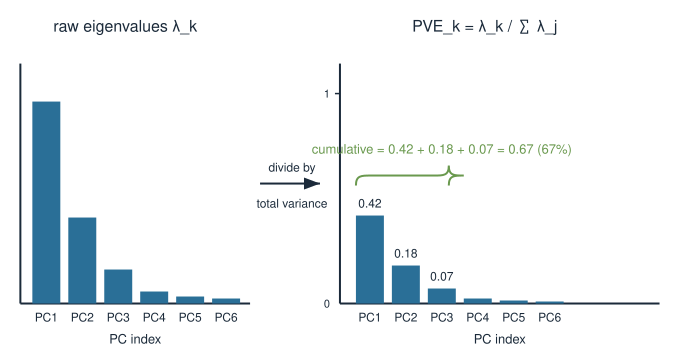
The scree plot and the elbow
Plot PVE (or the eigenvalue) against PC number. Typically it drops steeply then flattens into a shallow tail — the shape of a rubble slope, hence scree.
The elbow is where the steep drop gives way to the flat tail.
Heuristic (Cattell’s): keep the PCs before the elbow; treat the flat tail as noise.
The first few PCs are structure; the long flat tail is many tiny, roughly-equal eigenvalues — the fingerprint of noise.
Judgement call: the elbow is read by eye and is often ambiguous. Report how you chose it.
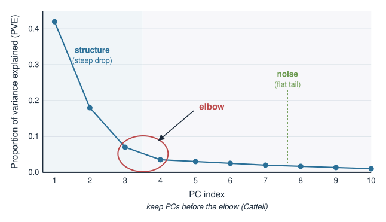
Cumulative-variance threshold
A more decisive rule: keep as many PCs as needed to reach a target cumulative PVE — commonly 80%, 90%, or 95%.
“Keep enough PCs to explain 90% of the variance” → find the smallest \(k\) with cumulative PVE \(\ge 0.90\).
Good when PCA is a compression / denoising step feeding a downstream model, and you want a guaranteed amount of signal retained.
The threshold is still a choice: 90% is a convention, not a fact. A flat scree tail means the last few percent cost many PCs.
Elbow and threshold often disagree — that disagreement is information about how structured your data is.
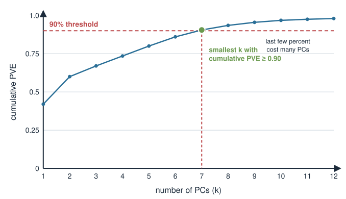
Two more rules you will meet
Kaiser criterion — on standardised data (correlation matrix), keep PCs with eigenvalue \(> 1\). Rationale: after standardising, each original variable contributes variance 1, so the average eigenvalue is 1; a PC “worth more than one variable” clears the bar. Known to over-retain; use with care.
Parallel analysis / permutation — compare your eigenvalues to those from randomised data (columns shuffled independently, so real correlations are destroyed). Keep only PCs whose eigenvalue exceeds what pure noise produces. More principled, needs a little computation.
No rule is authoritative. Sensible practice: look at the scree plot, sanity-check with a threshold, and if it matters, run a permutation check.
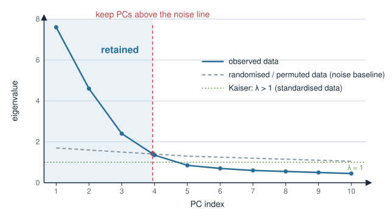
In R: variance explained and a scree plot
prcomp returns sdev; square it for the eigenvalues, then normalise.
pca <-prcomp(X, center =TRUE, scale. =TRUE) # X: samples x geneseig <- pca$sdev^2# eigenvalues = variance per PCpve <- eig /sum(eig) # proportion of variance explainedcumsum(pve) # cumulative PVE: 0.42, 0.60, 0.67, ...# scree plot: PVE vs PC indexplot(pve, type ="b", xlab ="PC", ylab ="Proportion of variance")# smallest k reaching 90% cumulative variancewhich(cumsum(pve) >=0.90)[1]
summary(pca) prints the same PVE and cumulative rows directly. screeplot(pca) draws the eigenvalues, but a hand-rolled PVE plot is clearer.
Pitfall 1: PCA is unsupervised
PCA maximises variance. It never sees your labels (tumour vs normal, treated vs control). So the largest-variance direction is not guaranteed to be the direction that separates your biological groups.
The interesting contrast might live on PC4, buried under three larger axes of nuisance variation.
Two samples far apart on PC1 need not differ in any way you care about.
If you have labels and want the axis that best separates them, that is a supervised question — the job of tools like the OPLS model (later in this block) or LDA, not PCA.
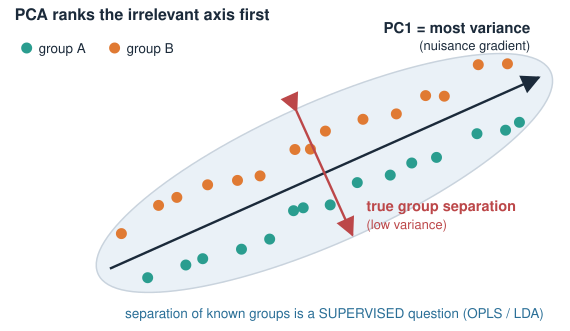
Pitfall 2: batch effects can dominate PC1
A batch effect is unwanted technical variation — two sequencing runs, two reagent lots, two hospitals. It is often large, so PCA, chasing variance, can put it on PC1.
You interpret PC1 as “disease subtype”; it is really “sequencing run.” The clusters are machines, not biology.
Colour the PCA by known technical variables (batch, run date, library size) before interpreting anything. If a technical variable lines up with a PC, that PC is suspect.
Batch effects are addressed by experimental design (randomise samples across batches) and correction methods (later, in the single-cell block), not by staring harder at the plot.
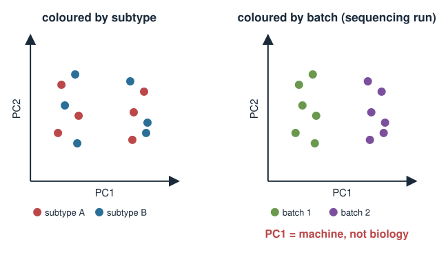
Pitfall 3: sensitivity to scaling
PCA is driven by variance, and variance depends on units. A feature measured in large numbers can dominate purely because its numbers are big.
scale. = FALSE (covariance PCA, the default): high-variance / high-expression genes dominate. Sensible only when all features share units and their spread is meaningful.
scale. = TRUE (correlation PCA): every feature standardised to variance 1, so all contribute equally regardless of scale. Usual choice when features are heterogeneous.
The two can give different PCs and a different scree plot. Scaling is a real modelling decision — state which you used and why.
prcomp(X, scale. =FALSE) # covariance PCA: big-variance features dominateprcomp(X, scale. =TRUE) # correlation PCA: all features weighted equally
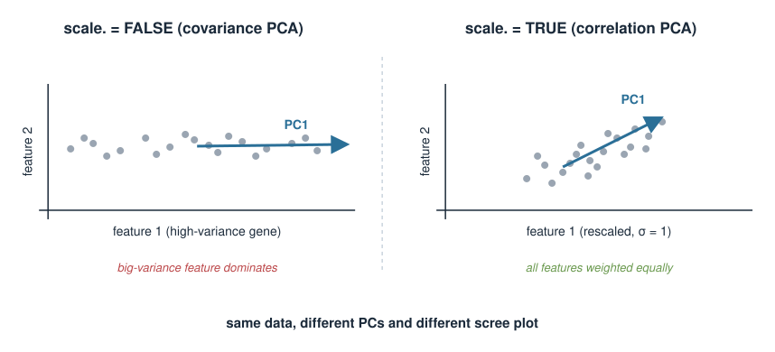
Pitfall 4: sensitivity to outliers
Variance is dominated by large deviations, so a single aberrant sample can bend a whole principal component toward itself.
One mislabelled or degraded sample can define PC1 by itself: everyone else collapses to a blob while the outlier sits alone at the far end.
Symptom: one point far off, the rest bunched — a PC that “explains variance” but only that one point’s variance.
Look at the score plots, investigate extreme points (technical failure? contamination?), and decide deliberately whether to fix, exclude, or keep them. Robust PCA variants exist for heavily contaminated data.
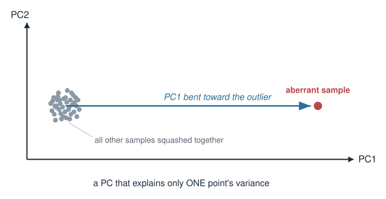
Pitfall 5: PCA only sees linear structure
Every PC is a linear combination of the original features — a straight axis through the data. PCA can only find linear structure.
Data on a curved manifold (an S-curve, a spiral, a developmental trajectory) has no good straight axis; PCA flattens the curve and may need many PCs to describe something simple.
Nonlinear biological structure — a differentiation trajectory, a cyclic process — is exactly where PCA struggles to summarise cleanly.
This is a built-in limitation, not a bug, and it motivates the non-linear methods on the next slide.
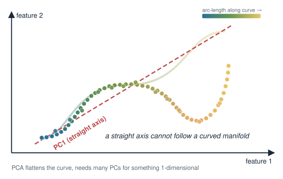
Beyond PCA (1): ICA
PCA gives axes that are uncorrelated and orthogonal, ordered by variance. Sometimes you want axes that correspond to separate underlying sources instead.
Independent Component Analysis (ICA) seeks components that are statistically independent, not merely uncorrelated — a stronger condition.
Uncorrelated and independent are the same only for Gaussian data; for non-Gaussian signals, independence says much more.
Motivating picture (the “cocktail party”): unmix overlapping sources. In biology, ICA can separate mixed transcriptional programmes co-occurring in the same samples.
ICA components are not ordered by importance, and their sign/scale are arbitrary — so “how many components” is decided differently than for PCA.
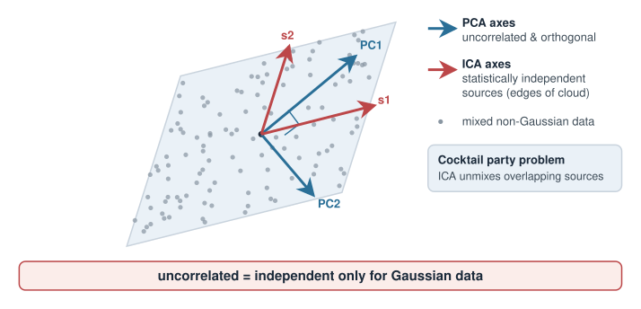
Beyond PCA (2): non-linear maps
To capture curved structure, use methods that preserve local relationships rather than global straight axes.
UMAP (and t-SNE) build a low-dimensional map that keeps nearby points nearby — good for visualising clusters and trajectories PCA flattens. You will use UMAP in the single-cell block.
Caveats: these embeddings are non-linear and stochastic; distances between clusters are not meaningful, axes have no units, and results depend on tuning parameters and the random seed. Great for seeing structure, poor for measuring it.
Common pipeline: PCA first to denoise and reduce dimensions, then UMAP on the top PCs — so today’s “how many PCs” question feeds directly into it.
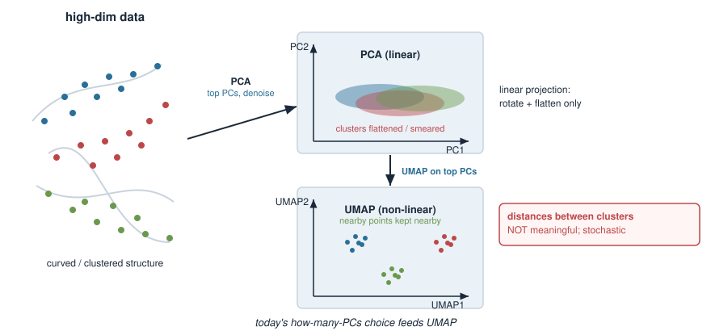
Summary
Question
Tool / idea
How much does PC \(k\) explain?
PVE\(_k = \lambda_k / \sum_j \lambda_j\) (in R: sdev^2, normalise)
How many PCs? (eyeball)
scree plot, keep PCs before the elbow
How many PCs? (reproducible)
cumulative-variance threshold (80/90/95%)
Other rules
Kaiser (\(\lambda>1\), standardised; over-retains), permutation / parallel analysis
Largest variance \(\ne\) interesting
PCA is unsupervised; use OPLS/LDA to separate known groups
PC1 looks like biology?
check it is not a batch effect — colour by technical variables
Same data, different PCs
sensitive to scaling (scale.) and outliers
Curved structure
PCA is linear; try ICA (independence) or UMAP (non-linear, single-cell)
Bottom line: every “how many PCs” rule is a heuristic — triangulate and report your choice; and always ask whether the variance PCA ranked highest is the variance you actually care about.